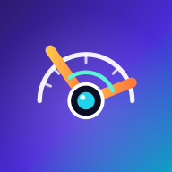

A capture saves the median of the last 0.5 s. Auto-capture saves each pose once the angle is steady (SD under 0.4°), moves to the next pose, waits for the leg to move, and turns itself off after pose 3.
A hold is when the angle stays within ±1.5° for at least 0.8 s. Tap a row to see that frame, check the pose of each hold, then save.
| # | Time (s) | Angle | SD | Pose |
|---|---|---|---|---|
| No video analysed yet. | ||||
Download and print the cards, stick them flat on a wall, and photograph each one the way you will film volunteers. Add a few deliberately imperfect shots (phone rotated, a step to the side, closer, further). The results table gives bias, MAE and worst error for your report.
| Condition | n | Bias | MAE | Max |
|---|
| True | Measured | Error | Condition |
|---|
reference_angles.csv is the file tools/analysis.py reads from data\. Repeated readings of the same subject · trial · pose are averaged; rows marked ×2 have duplicates, so delete the bad one before exporting.
| Subject | Trial | Pose | Angle |
|---|
This gives the angle its sign: bending is positive, over-straightening (hyperextension) is negative. Filming the right leg from its outer side with the back camera, the toes point right. If bending shows a negative number, flip this.
2D marker-based video goniometry in the sagittal plane: the angle at the knee sticker between the lines to the hip and ankle stickers. Validated only with printed cards (Accuracy tab), not certified as a medical device. Photos and video stay on this device; only the numbers you save are kept.